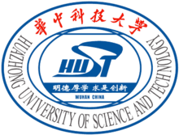
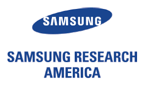

<style>
.university {
        background: grey;
        padding: 10px;
        color: white;
}
th,td {
    vertical-align: top;
}
</style>

<!-- One -->
    <section id="one">
        <div class="container">
            <header class="major">
                <h2>About me</h2>
            </header>
            <p>I'm a first-year PHD student in Computer Science Department of University of California, Santa Barbara and I'm really honored to be supervised by both <a href="http://www.cs.ucsb.edu/~william/index.html">Prof. William Wang</a> and <a href="http://www.cs.ucsb.edu/~xyan/">Prof. Xifeng Yan</a>. Before that, I spent a wonderful half year in Natural Language Computing Group in  <a href="https://www.microsoft.com/en-us/research/lab/microsoft-research-asia/">Microsoft Research, Asia</a> from Feb. 2017 to Sep. 2017, there I worked with Dr. <a href="https://www.microsoft.com/en-us/research/people/shujliu/">Shujie Liu</a>, <a href="https://www.microsoft.com/en-us/research/people/muli/">Dr. Mu Li</a> and <a href="https://www.microsoft.com/en-us/research/people/mingzhou/">Dr. Ming Zhou</a>. I have also worked with <a href="http://people.inf.ethz.ch/alucchi/"> Dr. Aurelien Lucchi</a> and <a href="http://www.da.inf.ethz.ch/people/ThomasHofmann/">Prof. Hofmann</a> in <a href="http://www.da.inf.ethz.ch/">Data Analytics Lab</a> in ETH Zurich for half a year. My research interests lie in natural language processing and deep learning, more specifically, I focus on research topics like machine translation, knowledge graph reasoning, semantic parsing and visual captioning.</p>
            <p>
            I am actively looking for Machine Learning/ Data Science summer internship in USA. If you are interested in my background, <a href="mailto:wenhuchen@cs.ucsb.edu">please do not hesitate to contact me</a>!
        </div>
    </section>

<!-- Two -->
    <section id="two">
        <div class="container">
            <h3>Education</h3>
            <table>
            <td width="1000px">
            <p>Computer Science department, UCSB (Sep 2017 &mdash; present)<br>
            PHD Student
            </td>
            <td>
            <p>
            </td>
            </tr>
            <tr>
            <td width="1000px">
            <p> Computer Sicence, ETH Zurich (June 2016 &mdash; Dec 2016)<br>
            Visiitng Student<br>
            </td>
            <td>
            <p>
            </td>
            </tr>
            <tr>
            <td width="500px">
            <p> ECE Department, RWTH Aachen University (Sep 2014 &mdash; Dec 2016)<br>
            Master Student <br>
            </td>
            <td>
            <p>
            </td>
            </tr>
            <tr>
            <td width="500px">
            <p> ECE Department, Huazhong University of S&T (Sep 2010 &mdash; June 2014)<br>
            Bachelor Student <br>
            </td>
            <td>
            <p>
            </td>
            </tr>
            </table>

            <h3>Work Experience</h3>
            <table>            
            <td width="1000px">
            <p>Samsung Research America, Montain View (June 2018 &mdash; Sep 2018)<br>
            Research Intern
            </td>
            <td>
            <p>
            </td>
            </tr>
            <tr>
            <tr>
            <td width="1000px">
            <p>NLC Group, Microsoft Research Asia (Feb 2017 &mdash; Sep 2017)<br>
            Research Intern
            </td>
            <td>
            <p>
            </td>
            </tr>
            <tr>
            <td width="1000px">
            <p> NLP Group, ebay Research (Dec 2015 &mdash; June 2016)<br>
            Research Intern <br>
            </td>
            <td>
            <p>
            </td>
            </tr>
            </table>
        </div>
    </section>

<!-- Three -->
    <section id="three">
        <div class="container">
        <h3>Conference Papers</h3>
<li><strong> AugNMT: Jointly learning to augment and translate natural language  <a span style="color: #009900;"></a></strong><br>
        Wenhu Chen, Guanlin Li, Shujie Liu, Zhirui Zhang, Mu Li, Ming Zhou<br>
        <em>Under Review</em> [<a href="">pdf</a>][<a href="">bib</a>]
<p>
  <li><strong> Variational Knowledge Graph Reasoning <a span style="color: #009900;"></a></strong><br>
        Wenhu Chen, Wenhan Xiong, William Yang Wang, Xifeng Yan.<br>
        <em>Proceedings of NAACL 2018, New Orleans, CA (Long Oral).</em> [<a href="https://arxiv.org/abs/1803.06581">pdf</a>][<a href="">bib</a>]
<p>
  <li><strong> Generative Bridging Network in Neural Sequence Prediction <a span style="color: #009900;"></a></strong><br>
        Wenhu Chen, Guanlin Li, Shuo Ren, Shujie Liu, Zhirui Zhang, Mu Li, Ming Zhou.<br>
        <em>Proceedings of NAACL 2018, New Orleans, CA (Long Poster).</em> [<a href="https://arxiv.org/abs/1706.09152">pdf</a>][<a href="">bib</a>]
<p>
  <li><strong> Video Captioning via Hierarchical Reinforcement Learning  <a span style="color: #009900;"></a></strong><br>
        Xin Wang, Wenhu Chen, Jiawei Wu, Yuan-fang Wang, William Yang Wang.<br>
        <em>Proceedings of CVPR 2018, Salt Lake City, UTAH.</em> [<a href="https://arxiv.org/pdf/1711.11135.pdf">pdf</a>][<a href="">bib</a>]
<p>
  <li><strong> Guided alignment training for topic-aware neural machine translation <a span style="color: #009900;"></a></strong><br>
        Wenhu Chen, Evgeny Matusov, Shahram Khadivi, JT Peter.<br>
        <em>Proceedings of AMTA 2016, Austin, TX (Long Poster).</em> [<a href="https://arxiv.org/pdf/1607.01628.pdf">pdf</a>][<a href="">bib</a>]
<p>
    <li><strong> Facial Emotion Recognition Using PHOG and a Hierarchical Expression Model <a span style="color: #009900;"></a></strong><br>
        Zhao Zhong, Gang Shen, Wenhu Chen.<br>
        <em>Proceedings of INCos 2013, XI`AN, CHINA</em> [<a href="http://ucelinks.cdlib.org:8888/sfx_local?sid=google&auinit=Z&aulast=Zhong&atitle=Facial+Emotion+Recognition+Using+PHOG+and+a+Hierarchical+Expression+Model&id=doi:10.1109/INCoS.2013.143">pdf</a>][<a href="">bib</a>]
        <p>         
        <h3>Preprints, Workshops and Patents</h3>
         <li><strong> A Joint Framework for Path Finding and Path Reasoning <a span style="color: #009900;"></a></strong><br>
        Wenhu Chen, William Yang Wang, Xifeng Yan.<br>
        <em>KBCOM Workshop of WSDM 2018, Los Angeles, CA.</em> [<a href="http://kbcom.org/papers/KBCOM_2018_paper_17.pdf">pdf</a>][<a href="">bib</a>]
		<p>
		  <li><strong> A Semi-supervised Framework for Image Captioning <a span style="color: #009900;"></a></strong><br>
        Wenhu Chen, Aurelien Lucchi, Thomas Hofmann.<br>
        <em>CoRR, 2017.</em> [<a href="https://arxiv.org/pdf/1611.05321.pdf">pdf</a>][<a href="">bib</a>]
		<p>
		<li><strong> Using meta-information in neural machine translation <a span style="color: #009900;"></a></strong><br>
		        Evgeny Matusov, Wenhu Chen, Shahram Khadivi.<br>
		        <em>US Patent, 2017</em> [<a href="https://patents.google.com/patent/US20170323203A1/en">pdf</a>][<a href="">bib</a>]
        </div>
    </section>